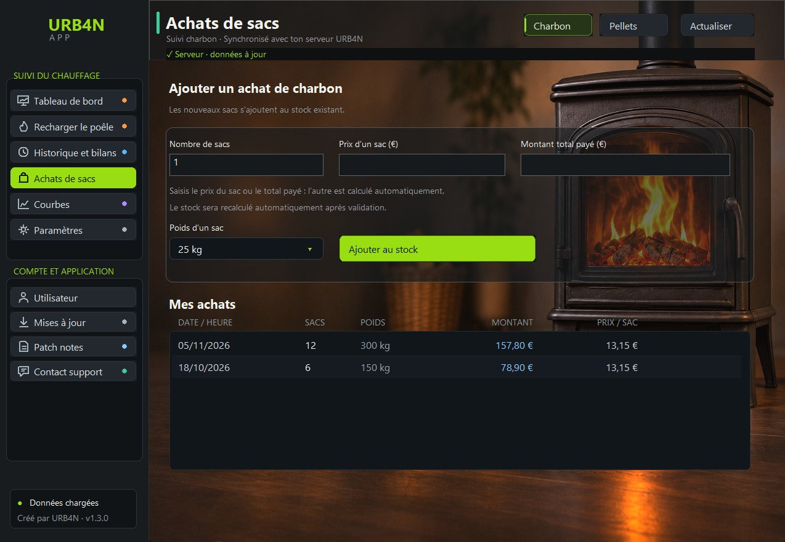
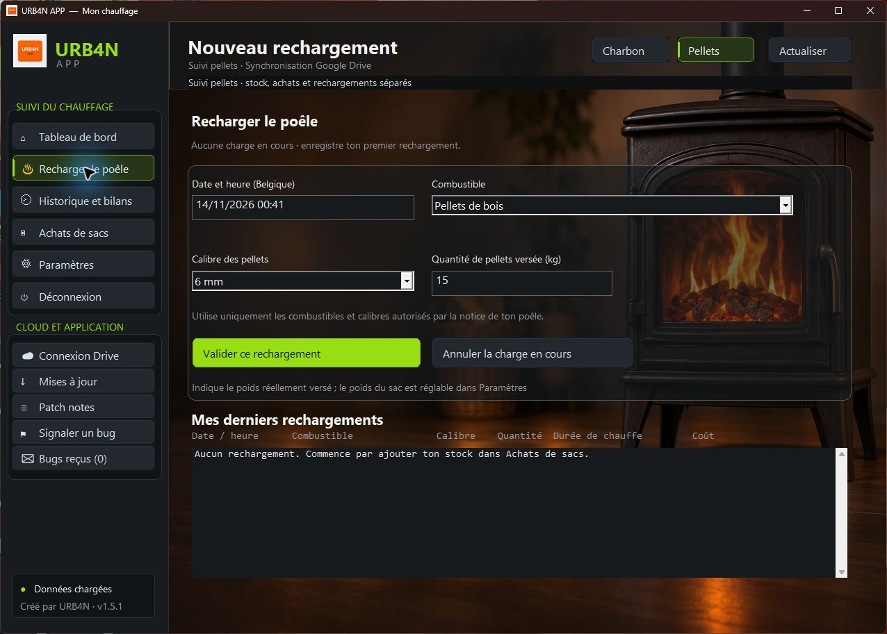

Windows et Android · Suivi personnel
Ton chauffage.
En un coup d’œil.
URB4N APP t’aide à suivre tes rechargements de charbon ou de pellets, tes achats de sacs, ton stock et ton coût quotidien. Tes données de chauffage sont sauvegardées dans ton propre Google Drive.
Télécharger pour WindowsVoir les capturesNouveau · Android en bêta
Ton suivi, aussi dans ta poche.
URB4N APP Android reprend les suivis charbon et pellets, les achats, les réglages et la durée de chauffe. Connecte le même compte Google pour utiliser le suivi Drive et le Sheet associés à ton application Windows 1.5.3.
Version 1.0.0 bêta 3 · Android 8 ou plus récent, appareil 64 bits avec services Google Play. Installation par fichier APK, hors Google Play Store.
Version de test : interface et calculs vérifiés automatiquement sur émulateur ; connexion Google et échanges entre un vrai téléphone et Windows encore à confirmer sur appareil. La boîte de réception administrateur et les pièces jointes des bugs restent disponibles sur Windows.
La validation Google n’est pas encore terminée : un avertissement et un plafond de connexions peuvent s’appliquer. Aucun compte Google n’est fourni avec l’application.
À l’intérieur de l’application
Un aperçu avant de te lancer.
Une interface sombre, un poêle animé en fond et tes outils de suivi à portée de main. Clique sur une capture pour l’agrandir.

Ton chauffage en un coup d’œil
Stock, autonomie, consommation et derniers rechargements sur un seul écran.


Des achats faciles à suivre
Indique le prix du sac ou le total payé : l’autre montant est calculé automatiquement.


Charbon et pellets, chacun son suivi
Choisis le combustible, son calibre et la quantité réellement versée dans le poêle.
Captures de la version 1.5.1, sans historique personnel ni achat enregistré.
Suivre
Enregistre les dates, combustibles, calibres et quantités. Consulte l’historique et les bilans par jour ou par mois.
Adapter
Renseigne les poids vide et plein de ta charbonnière. L’application déduit le poids du récipient et calcule les fractions versées.
Retrouver
Reconnecte ton compte Google pour retrouver tes sauvegardes privées. Les cellules de saisie de ton tableau Google Sheets personnel sont synchronisées dans les deux sens avec Actualiser.
État de la connexion Google
La version 1.5.3 suit le charbon et les pellets séparément et synchronise les cellules de saisie de ton Sheet personnel dans les deux sens. Après le renommage du dépôt de téléchargements, installe une fois le nouvel installateur manuellement pour actualiser les adresses de mise à jour.
Le projet Google est en Production : la connexion n’est plus réservée à la liste de testeurs. La validation Google est encore en préparation ; un avertissement et un plafond peuvent s’appliquer aux autorisations sensibles non approuvées. Une installation vierge nécessite encore une configuration de connexion fournie par l’éditeur.
Inscription URB4N APP
À partir de Windows 1.5.2 et Android bêta 2, l’inscription du compte Google est requise pour accéder au suivi. L’adresse e-mail et un identifiant protégé sont conservés dans le registre privé de l’éditeur, pour afficher la liste et le nombre de comptes inscrits. Aucun mot de passe, historique de chauffage ou date de connexion n’y est ajouté. Tu peux supprimer ton inscription dans l’application ; cela verrouille de nouveau le suivi sur cet appareil sans supprimer tes données de chauffage.
Android bêta 2 ajoute la reprise de connexion après redémarrage et une page Mises à jour avec contrôle de l’APK. Depuis la bêta 1, installe une fois la bêta 2 manuellement ; les suivantes pourront être recherchées depuis l’application, avec confirmation Android.
Une synchronisation plus légère
Windows 1.5.3 et Android bêta 3 regroupent les lectures charbon/pellets et évitent de renvoyer les onglets calculés inchangés pendant la session. Sur un scénario de test identique, l’export courant passe de 2,63 Mo à 1,27 Mo, soit environ 52 % de données transmises en moins. Ce chiffre ne garantit pas le même gain en secondes sur chaque connexion. Les contrôles des modifications et des conflits sont conservés ; la première création ou migration peut rester plus longue.
Pourquoi connecter Google ?
La connexion permet d’enregistrer et retrouver ton suivi dans l’espace privé de l’application sur Drive, ainsi que de créer le tableau Sheets associé. Un ancien tableau peut être lu pour un import initial lorsque cette option est configurée. Google affiche les autorisations demandées avant que tu les acceptes.
Un bug à signaler ?
Le menu « Signaler un bug » permet d’envoyer volontairement un titre, une description et, si tu le souhaites, une capture. Ces rapports sont conservés dans le Drive privé de l’éditeur pour être traités.
Consulte les règles de confidentialité et les conditions d’utilisation avant de connecter ton compte.